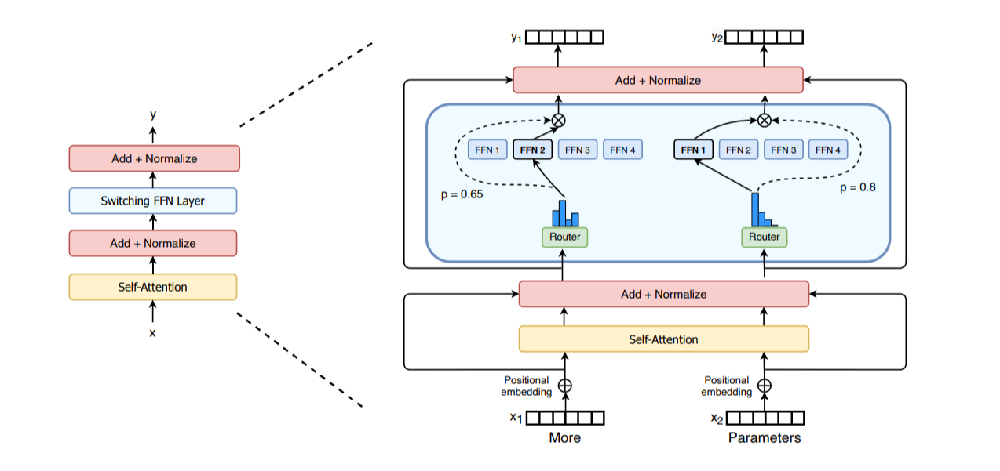
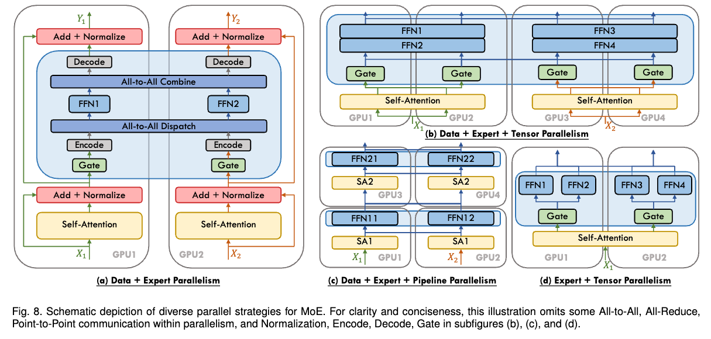
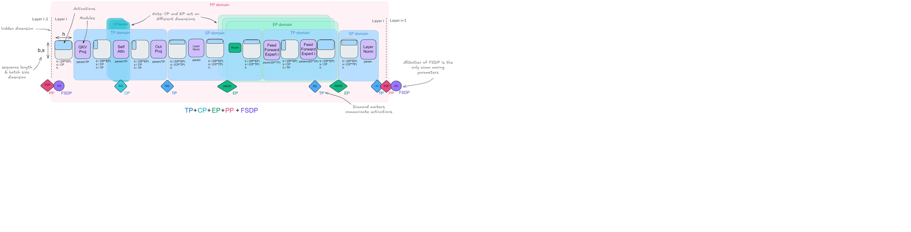
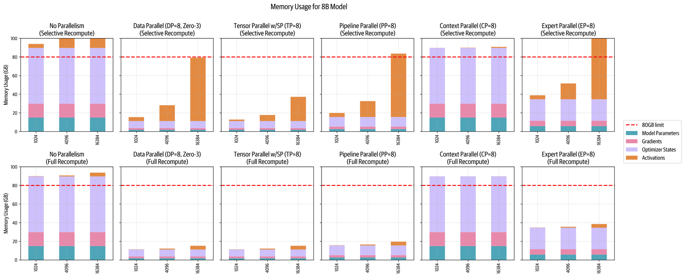
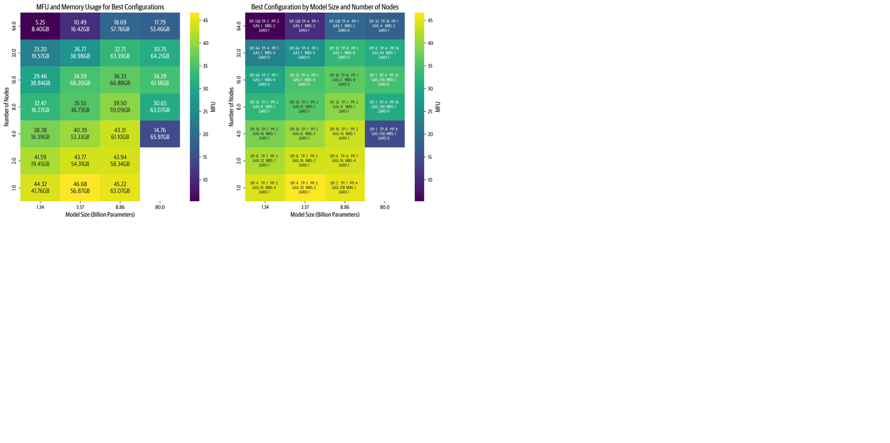

前三篇已经走过了数据并行、张量并行、序列与上下文并行、流水并行，到了要给这条从单卡到集群的旅行补最后一块地图的时候了：当模型为了省算力、扩容量，把每一层的单前馈模块换成一支并列的专家队伍（Mixture-of-Experts），每个token该敲哪位专家的门由路由器来裁决，而这些专家又该如何摊上多张卡。把专家切分布到GPU上的专家并行，正是我们要在五根轴里补齐的最后一根：它沿专家的维度切模型，靠all-to-all这把路由把token送去对口的专家再收拢结果。本文先拆解EP为何天生适合MoE、又为何总爱拉上数据并行；随后把五根轴连同ZeRO的三档显存策略一并攒进同一张总图里逐条对比，看它们各自切什么、省什么、又咽下怎样的通信；最后一程不再纸上谈兵，而是跟着作者在你身边的真实集群上演一场规模浩大的选型实验，看数千组配置跑出来，到底哪个组合配你的模型与网络最划算，以及他们为此踩过哪些坑。
和前几篇一致，原文里的交互式动画、可拖拽的层数与路径长条这类动态演示，我们都用文字讲清它们要表达的结论，不截取任何静态伪帧；示意结构图与基准热力图则是真实矢量图形，已照原样转成图片嵌入正文。公式与关键数据点尽量原样保留，方便与前几篇、以及后续钻进GPU内部的篇目相互对照。
这是我们要讨论的最后一种并行方法。若你对混合专家没有概念，作者建议先读他们早前那篇更短更轻松的博客建立起MoE的总体直觉。MoE是近期才随着GPT-4、Mixtral，以及最近的DeepSeek-V3/R1一步步站到聚光灯下的：它的核心念头朴素又大胆，与其让每一层只挂一个前馈模块，不如在同一层摆出一排相互独立的前馈模块（也就是专家），再让每个token经路由器挑上一组专家，走一条属于自己的更省算力的路。下面这张取自Switch Transformers论文的示意图，把一个MoE层内部：路由器、若干并行的专家前馈、以及被分派开来的token流在画布上并排摊开。

正是MoE层这种天然的松散结构，给了我们在专家这一维上动刀子的自由：让不同worker各自负责一位或一组专家的前馈层，这就叫专家并行（Expert Parallelism，EP）。做这件事比张量并行轻省得多：TP要把同一次矩阵乘切开再合拢，EP却完全不必拆散热门的矩阵乘，它要做的只是把某个token的隐状态准确送到该处理它的那位专家手上。
需要先把话摊开：实践里EP几乎不做孤胆英雄，而更常和其它并行策略牵上手，最常见的拍档是数据并行。理由就藏在它的适用范围里：EP只作用在MoE层上，并不会像上下文并行那样去切输入token（CP会把token沿序列维拆开）。这意味着要是我们只用EP、其它的什么都不配，那些非MoE的模块各张卡做的是一模一样的活，纯属把计算白跑一遍。把EP与DP合在一起，专家们沿着专家维散开，输入batch又沿数据并行那根轴散开，显存与算力都被摊得均匀许多。下面这张出自A Survey on Mixture of Experts的示意图，把EP配DP时卡与专家两块同时铺平的样子画得很直观。不过作者提醒你别急着钻牛角尖：下一节马上会系统讲各种并行策略之间的咬合，此刻看不懂这张图并无大碍。
要把EP跑得既快又省，有几点窍门和模型设计裹得极紧。DeepSeek-V3就拿约束路由器做文章：强制每个token至多只被送到M个节点（它家用的是4个），为的是让token尽量只在单个节点内走动，好把节点间不必要的通信砍掉。专家并行说来已是多年的老面孔，只是随着MoE架构近期卷土重来，它才又一次成了训练侧的当红手段。在nanotron与picotron里，一个更完整的EP示例也正在路上，作者请你保持关注。
EP这种送法，本质靠的是火车调度式的all-to-all通信原语：先把各GPU手里属于其它专家的token送过去，让每块卡只跟它负责的专家打交道；等那位专家算完，再用同样一把all-to-all把结果沿原路收拢回去。它引入的通信开销不算大，买来的却是模型容量近乎免费的扩张：无论推理还是训练，每个token其实只被全部参数里小得多的那一撮处理过，其余专家可以做得极窄极细而不必每个token都走一遍。

正因为输入这条路径上EP与DP长得像，有些实现会顺理成章地把专家并行视作数据并行的一支分支，两者本质差别只在于：EP走的是一套专门的路由，而DP是让所有GPU各持同一份模型副本、把整个输入各算一遍。当模型的专家数量滚到很大时，把专家切开摊上多张卡才真正值得下手：DeepSeek-V3一口气就挂了256位专家，足够说明这门生意的量级。
恭喜读者，到此为止把训练能架的并行策略已经凑齐了五根：数据并行沿着batch维，张量并行沿着隐藏维，序列与上下文并行沿着序列维，流水并行沿着模型的层，专家并行沿着模型的专家。再加上可以叠进数据并行去省内存的三档ZeRO：ZeRO-1把优化器状态在DP副本之间切开，ZeRO-2连梯度一起切，ZeRO-3更进一步把参数也归入切分之列。
到这一步，你最想弄明白的大概是：这些策略长得像的、看似可以混搭的、彼此排斥的到底谁是谁？我们就挑对比张力最大、又最容易混淆的组合来逐个解开，头一个出场的自然是流水并行与ZeRO-3，因为它俩表面极像、底子里却大相径庭。
PP与ZeRO-3的相似一眼可辨：两者都在多张GPU上切开模型权重，通信也都压在这根叫模型深度的轴上：例如ZeRO-3会赶在正算当前层的时候，提前抓取下一层的权重。这意味着在两种方案里，完整的层级运算都是在一台设备上成块算完的，并不像TP或EP那样把活儿拆到比层更细的子单元。为了读着顺，下面统称一层为模型切分的基本单位，实际上它指的是一组层。
可它们的差异同样醒目。ZeRO-3让每台设备只存一层里的一小片，通信流转的是权重；PP却让每台设备各攥一整个层，通信流转的是激活。Orchestration上两者都可与具体模型解耦，难度都藏在实现里：ZeRO-3的坎是把模型切分与通信编排做对，PP的坎是设计出又高效又不过分复杂的调度。扩缩的性情也相反：ZeRO-3偏爱更大的微批与更长的序列好把通信藏进计算；PP则偏爱更大的梯度累积，好把流水气泡按下去。
| 对比 | ZeRO-3 | 流水并行PP |
|---|---|---|
| 每块计算单元存 | 一层里的一小片 | 一整层 |
| 通信流转的东西 | 权重 | 激活 |
| 编排 | 与模型无关 | 与模型无关 |
| 实现难点 | 切分模型与编排通信繁复 | 高效PP调度难写 |
| 扩缩性情 | 爱大微批与大序列来藏通信 | 爱大梯度累积去掩住气泡 |
这张对照表点破了一件事：ZeRO-3与PP解的是同一个难题，只是手里各攥着两套截然不同的解法，最终选哪套，取决于你更愿意把昂贵通信花在权重上还是花在激活上。两条路虽然可以并路同行，现实里却极少有人真去合体：因为一旦合流，就要把全局batch往上加得相当大，才有本钱把两者各自那份通信成本摊平，于是全局batch、模型大小、网络带宽与训练效率之间被撕开一道此消彼长的权衡。万一你真决定把它们并在一起，ZeRO-3应当被设成在一整串PP微批期间都把权重留在显存里，这样能把多余的反复搬运压到最小。反过来，只碰优化器状态与梯度的ZeRO-1和ZeRO-2就随和得多：它们与流水并行能毫不费力地叠用，也不会引出一个新的难题，DeepSeek-V3的训练便走了PP配ZeRO-1这条路。
张量并行（配上序列并行）又是一种画风。它靠的是矩阵乘的分配律，权重与激活可以先各自切开、独立算出部分和，事后才合拢，所以它与PP、ZeRO-3都能自然互补、随时混搭。可我们也讲过，为什么不该只用TP当唯一顶梁柱：其一，TP的通信几乎全压在计算关键路径上，超过某个规模之后通信渐渐喧宾夺主，很难往上无限扩；其二，ZeRO与PP都能与具体模型解耦，TP却要战战兢兢地处理激活切分的方向，一会儿沿隐藏维（TP区内）、一会儿沿序列维（SP区内），实现要对模型有细节的了解，还得一路盯紧切分形态别出差错。
于是拼装各策略时有了一条心照不宣的惯例：TP专门留给节点内那种快到极致的通信链路，ZeRO-3与PP则去扛横跨低速节点间链路的并行小组，前者对带宽咬得更松（PP），后者的通信又更容易与计算叠在一起（ZeRO-3）。真要把它们拼进同一台机器，命题就变成如何按各并行维把GPU高效地分好组，让吞吐尽可能大、通信尽可能小，同时始终记得TP的扩缩天花板：TP各组内的GPU要尽力塞在同一个节点里。
上下文并行与专家并行，各自捶两处别的维度治不动的硬骨头，可以视为TP的补充。先看CP：它专治把序列拉到极长时的困境，做法是把激活沿序列维切开摊到各GPU上。除注意力之外的地方，MLP、LayerNorm这些算子对早已切好的序列片各算各的、互不打扰，唯独注意力躲不开通信，因为每个token都得拿到完整序列的key与value，这一交接地带正是我们上一节用环状注意力把轮转与计算叠起来的原因。CP的价值在序列真的冲上128k token甚至更长的量级时格外扎眼：哪怕把激活全量重算，单卡也不一定背得动那一整条超长序列的注意力。
EP则是冲着MoE模型去的：把一支支专职的专家切开部署到多张GPU上，计算进行时再把token动态路由给相关的专家。它的命门通信正是前面说的all-to-all那一趟：先把token送回它们的专家、算完再原路收回结果。因此想摊平EP的开销，除了把路由写好，很大程度上要看模型与开关的设计，也就是DeepSeek-V3用一句话锁住的节点专用约束。理论上，EP与CP也互不打架，可以放心并起来用，因为前者管专家、后者管序列，井水不犯河水。
把作用范围收拢起来看就能一目了然。TP（以及它的搭档SP）贯穿整个模型，从权重到激活两头都切，因此它对算力与显存的照顾是全方位的；CP的心思几乎全花在注意力层上，那是唯一要跨token交换key与value的地方，其余层对切开的序列能自顾自地算；EP只动MoE层（它取代的正是普通MLP那一块），注意力及其它部件原地不动；PP与ZeRO则不对任何特定子模块偏心，只有一处例外：PP要求各模块与层大致均衡，因此带着词嵌入的首尾几层常被特殊对待。
三招对号入座地看也更清爽：TP加SP把权重与激活沿隐藏维或序列维一起切，通信发生在矩阵乘（行列线性）那一带，实现要懂模型、且爱吃节点内高带宽；CP只切激活、沿序列维摊开，通信只出现在注意力取key与value的地方，除注意力外与模型无关、却在长序列上格外受用；EP切的是专职专家的权重与激活、沿专家维散开，通信是token到专家的那次路由，除MoE层外与模型无关、但天生要求模型就长成MoE的样子。

最后把散落在各篇里的显存账本合并到同一张图上看。下面这张图把每一招的显存省法都叠在同一条序列长度轴上：横轴是序列长度，纵轴是显存占用，除开各曲线对照的某一根并行轴之外，它还特别用上下两半呈现了选择性重算（上方）与全量重算（下方）两种激活策略的差别，于是你能同时看见：谁在与随序列疯长的激活缠斗，谁的省法另辟蹊径，谁又几乎与序列长度不相干。把叙事再压成一张表就更利落，每一招省什么、怎么切、软肋在哪，都列在下面。

这张总表里没有哪一招是能凭空把规模变大的银弹，这正是作者反复强调的：想铺出真正的大规模训练，多半要把几招叠起来使，凭网络与显存的性状，把TP留在节点里、把PP与ZeRO-3放到节点间、让CP与EP去治它们专治的病症。
| 方法 | 显存省在 | 切分维 | 软肋 |
|---|---|---|---|
| DP | 激活（本地batch变小） | Batch | 受最大batch限制 |
| PP | 模型参数 | 模型的层 | 空闲气泡与复杂调度 |
| TP/SP | 模型参数与激活 | 隐藏维 / 序列长 | 依赖高带宽通信 |
| CP | 激活 | 序列长 | 注意力模块加通信开销 |
| EP | 专家参数 | 专家维 | 需MoE层、带路由通信 |
| ZeRO-1 | 优化器状态 | DP副本间 | 参数通信开销 |
| ZeRO-2 | 优化器状态与梯度 | DP副本间 | 参数通信开销 |
| ZeRO-3 | 优化器状态、梯度、模型参数 | DP副本间 | 参数通信开销 |
累积到这里，读者大概跟我们一样会冒出同一个念头：有没有哪怕几条粗略的规则，能帮人从一片汪洋里先捞出一个不算太差的起点方案？作者的答案藏在下面的总表结构里，但更落地的指导在接下来那节：它把选型的完整流程一步步走给你看。这里先给一句提纲挈领的话：这几根轴谁也不是完美的万能钥匙，它们的价值要在你的带宽、节点规模与模型命门上重新称量，而称量的最好方式就是跑一组真实基准，这正是下一节要架起来的脚手架。
覆盖完全部并行技术，以及它们为何、如何能合并使用之后，一个问题总会浮出水面：落到自己手里这套云山雾罩的组合拳里，哪几个才值得最后留下来？上一节给过一些端倪，这一节我就把一套可能的决策流程一步步展开，同时反复提醒：真正定案仍要亲自跑几组实验，因为最优配置死死咬在你集群的物理性状上：网络带宽、每节点GPU数、单卡显存、节点间拓扑，一样都省不得。
头一个要解决的命题，是如何把一整个模型实例稳稳塞进手头的GPU。这里按家底厚薄分成两种情境。卡多得宽裕时，直接照着模型规模挑起步组合：10B参数以下的模型，一套并行招便够，例如两张8卡的机器上、用张量并行，或ZeRO-3配数据并行再加全量重算；10B到100B、需要8张卡以上的模型，就有几条现成的路可走：把张量并行做到TP=8再叠一层流水并行，或者TP=8配数据并行（ZeRO-3），也可以干脆只上ZeRO-3也就是纯数据并行；等到512张卡往上的大阵仗，纯粹的数据并行或ZeRO-3会因通信太凶越来越钝，届时把DP与张量并行、或与流水并行掺着使往往更划算；到了1024卡那种军备规模，作者推荐的是一套TP=8、配带ZeRO-2的数据并行、再叠流水并行的组合作为稳妥的出发点。
这里得先厘清一层：上表说的都是怎么装下第一个模型实例。哪怕我们会借ZeRO-3来达成这一步装得下的目的，此刻真正想省下的、也仅仅关心ZeRO-3按需取用那部分参数带来的显存收益，其它并行策略的收益先按下不表。两条针对特殊形状的特别提及也别漏掉：序列长得过分时，值得在跨节点的组上加上下文并行；模型天生是MoE时，值得把专家并行架到跨节点的组上。走到卡少将就的那一端，也同样有活路可走：把激活做全量重算，拿点算力去换显存（代价是训练微微变慢）；或者把梯度累积调大，让眼前这点显存也能咽下更大的chunk。等第一步的模型实例能稳定练下去，就该回头校正batch的尺寸了。
迈出第一步时我们手里那个微批大小与数据并行的组合，可能让当前全局batch不是偏大就是偏小，现在正好把它拨到目标值。嫌小想放大：去抬数据并行的度数、或者把梯度累积步数加高；序列一旦拖得很长，还能借上下文并行的手直接把batch放大。嫌大想收小：把数据并行压下去、省出的力度转投其它并行策略，同理会考虑收窄上下文并行。如此，模型与batch都基本就位，训练起来够不够快就成了下一个问题。
想让所有金贵的GPU分分秒秒都忙而不闲，只要显存与通信还没卡脖子，就有大把可以继续拧的螺丝：顺着节点内那快到极致的带宽，把张量并行一路升到接近节点规模的度数，好把其它并行度的压力先卸下一截；再在目标batch不变的前提下，把带ZeRO-3的数据并行往上抬；等数据并行自己的通信开始冒头成了瓶颈，就顺势切到流水并行那套去；另一条路子是把不同并行一根根轮着加码、逐次观察；最后，多试几档微批大小（mbs），在最大可容纳的全局batch、模型大小、计算量与通信量之间，找一个吞吐最漂亮的中点。
流程讲得头头是道，作者没有止步于纸上。他们在nanotron仓库里备好几套脚本，好让你也能照着上面这套步骤，用自己的模型与集群跑一遍真实的benchmark。而作者自己，则在1到64个节点、每节点8张H100的各种集群形态上，把前几篇讨论过的每一种模型规模都测了个遍；即便先滤掉那些从根本上无解的配置，最后仍要跑成千上万次实验。凭此海量实测，才有了这本书从开篇用到现在的许多结论。
所有基准都统一用4096的序列长度、一百万token的全局batch跑出来。他们把每个模型规模与集群大小下表现最好的那批配置收拢起来，画成下面这张热力图：横纵轴各铺开模型大小与计算节点数（8卡记作一节节点），每一个格子记录的配置细节包含数据并行、张量并行、流水并行、梯度累积步数、微批大小与ZeRO档位；格子的深浅则映射模型的算力利用率（MFU），越亮代表效率越高，读图时顺着最亮的那一行走，就能大致摸出各规模下推荐的骨架。作者不忘在公布这张图时顺带对同事们致歉：为了跑完这些基准，他们占了科学集群的大半，也替可能一路被私下威胁的处境求了个情。

从这幅高层俯瞰图里，作者提炼出值得写进笔记的三条结论。第一，随着节点增多，训练效率几乎必然往下掉，这一趋势在小模型身上尤其扎眼：小模型计算量对模型规模的比例本就不高，我们常想靠加大batch去补足，却被一百万token的全局batch上限死死按住了手脚。第二，大模型的难题换了一副面孔：模型一大显存需求就水涨船高，节点不足时要么根本装不下，要么勉强塞下却因为贴着显存的天花板跑得又慢又虚，四个节点硬扛80B的那个格子就是活生生的例子。第三点最磨人，也最反直觉：性能对实现质量的依赖，远超纸面上能算清的账。两套并行策略刚写完时，张量并行稳稳压过流水并行；等作者把PP的实现优化了一轮，它反而成了跑得更快的那边；而现在他们正埋头改进TP里的通信重叠，料想把这块补上后，性能头名的宝座很快又要回到张量并行手里。
这本书的野心不只是把理论和实现讲明白，更想端出一批真实数据点。所以计划干脆利落：每个模型的每一种可能的分布式配置，都拿到1到64节点的8卡集群上跑一遍，排除掉物理上无解的之后，仍需海量实验在有限时间内跑完。纸上谈来轻巧，可实验第一批刚投下去就变了天：PyTorch进程偶尔摆不干净收尾、把节点拖进坏状态；Slurm任务管理器会蛮不讲理地强杀任务、随之带崩节点；有的基准明明几分钟就该出结果却一拖就是几小时；个别任务干脆挂死，怎么等都等不到它醒过来。
作者于是把大把时间砸在给这些实验收尾补漏的工程上：压缩集群重启的时间、把空转窗口压到最小；逐行翻检详尽的NCCL调试日志，追出症结；吃透内存使用的习惯与CUDA显存分配器的脾气；还把多节点下流水并行的表现再抬高一截。这些搓磨单拎一件都够写一篇独立的故事，但它们磨出了作者对分布式训练基建底色最活的认知：许多理论上干净利落的安排，落到生产里总会被一个又一个会动的部件咬住。想在实践中复现论文的数字总是很难，尤其当可参考的成熟训练代码又难得一见的当下。作者把希望寄托在开源上，靠着nanotron与picotron这两套项目，让这些高阶技巧对更多人平易起来，也让愿意合作的人攥着简单又高效的代码，把自己的硬件资源用得一分不剩。
参考：https://huggingface.co/spaces/nanotron/ultrascale-playbook